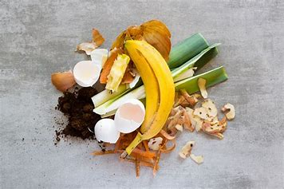
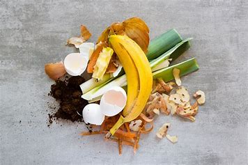

Cómo Funciona
Sigue estos pasos para clasificar tus residuos:
- Inicia la cámara para detección en tiempo real o sube una imagen.
- Para la cámara, posiciona el objeto en el encuadre para verlo clasificado.
- Para imágenes, sube el archivo y mira su clasificación.
 


Guía de Reciclaje
| Categoría | Ejemplos |
|---|---|
| Reciclable | Botellas de plástico, papel, cartón |
| No Reciclable | Plásticos sucios, pañales, espejos |
| Orgánico | Restos de comida, cáscaras, hojas |